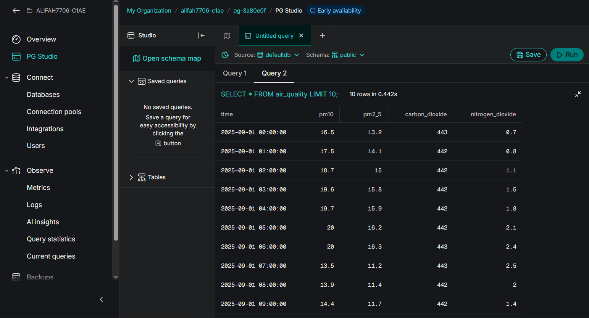
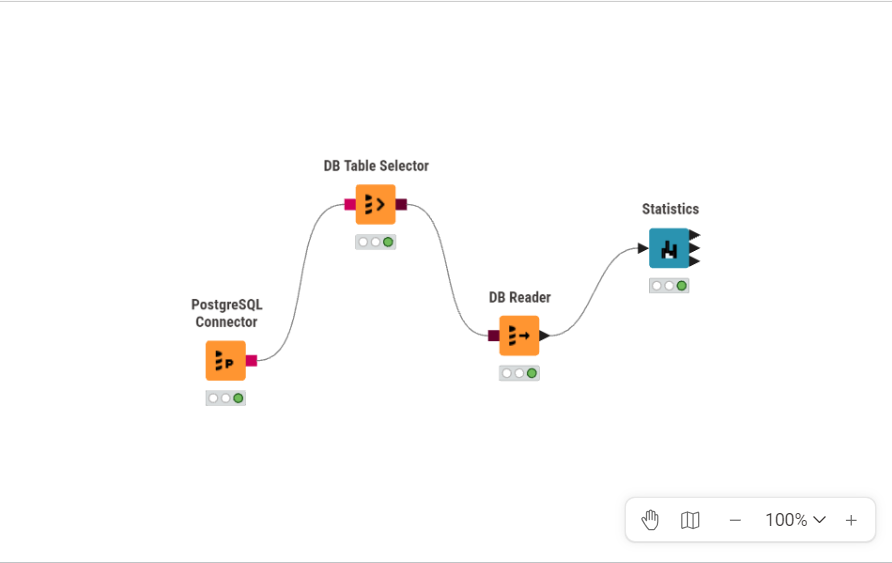

Analisis Data NO₂ Kecamatan Kota Sumenep
Website ini dibuat untuk memenuhi tugas mata kuliah PSD mengenai pengumpulan, pemahaman, eksplorasi, pembersihan, dan pengolahan data kualitas udara.
Data yang dianalisis adalah NO₂ (Nitrogen Dioksida) pada wilayah Kecamatan Kota Sumenep, Kabupaten Sumenep, Jawa Timur.
Pengambilan wilayah dibatasi menggunakan GeoJSON. Data NO₂ diperoleh dari data Sentinel-5P melalui Copernicus Data Space/openEO, kemudian dilakukan agregasi harian pada wilayah penelitian.
Periode: 31 Agustus 2025 - 31 Agustus 2026
Ringkasan Data
366
Observasi Harian
1
Parameter Polutan
NO₂
Polutan
68
Fitur TSFEL
1. Business Understanding
Tujuan
Tujuan dari tugas ini adalah mengetahui kondisi dan pola data konsentrasi NO₂ di Kecamatan Kota Sumenep selama periode pengamatan 31 Agustus 2025 sampai 31 Agustus 2026.
Permasalahan
Konsentrasi NO₂ dapat berubah dari waktu ke waktu. Oleh karena itu diperlukan proses pengumpulan dan pengolahan data untuk mengetahui pola perubahan, menemukan nilai yang tidak biasa, menangani missing value, dan menghasilkan fitur yang dapat digunakan untuk analisis lebih lanjut.
Pertanyaan yang Ingin Dijawab
- Bagaimana perubahan nilai NO₂ selama periode pengamatan?
- Apakah terdapat nilai NO₂ yang terdeteksi sebagai outlier?
- Bagaimana kondisi data setelah proses pembersihan dan imputasi?
- Fitur apa saja yang dihasilkan dari ekstraksi TSFEL?
Manfaat
1. Informasi
Memberikan gambaran mengenai data NO₂ pada Kecamatan Kota Sumenep selama satu tahun.
2. Analisis
Membantu melihat pola perubahan NO₂ berdasarkan waktu dan karakteristik statistik data.
3. Pengolahan Data
Menunjukkan proses pengolahan mulai dari pengambilan data, deteksi outlier, imputasi, hingga ekstraksi fitur.
4. Pembelajaran
Melatih penerapan proses data science pada data lingkungan dengan wilayah penelitian yang spesifik.
Data NO₂ digunakan untuk memahami perubahan konsentrasi nitrogen dioksida pada Kecamatan Kota Sumenep dan menjadi dasar untuk proses eksplorasi serta ekstraksi fitur.
2. Data Understanding
Sumber Data
Data NO₂ diperoleh dari Sentinel-5P melalui Copernicus Data Space/openEO.
Wilayah pengambilan data dibatasi menggunakan polygon GeoJSON Kecamatan Kota Sumenep.
Wilayah dan Periode Data
Wilayah: Kecamatan Kota Sumenep, Kabupaten Sumenep, Jawa Timur
Periode: 31 Agustus 2025 - 31 Agustus 2026
Jumlah observasi: 366 data harian
Parameter: NO₂
Parameter Polutan
NO₂
NO₂ atau nitrogen dioksida merupakan gas yang berkaitan dengan proses pembakaran dan aktivitas manusia.
Sumber NO₂ dapat berasal antara lain dari kendaraan bermotor, pembakaran bahan bakar, dan aktivitas industri.
Parameter yang digunakan dalam tugas: NO₂ saja.
Deskripsi Data
| Kolom | Tipe Data | Penjelasan |
|---|---|---|
| date | Datetime | Tanggal pengamatan data NO₂. |
| NO2 | Numerik | Nilai konsentrasi/hasil pengukuran NO₂ dari data Sentinel-5P yang telah diagregasi pada wilayah penelitian. |
3. Eksplorasi Data
Eksplorasi dilakukan untuk memahami kondisi awal data NO₂ sebelum proses pembersihan dan ekstraksi fitur.
Pemeriksaan Data
| Pemeriksaan | Hasil |
|---|---|
| Jumlah observasi pada periode tugas | 366 |
| Periode | 31 Agustus 2025 - 31 Agustus 2026 |
| Parameter | NO₂ |
| Missing value setelah imputasi | 0 |
| Outlier berdasarkan IQR | 4 |
Deteksi Outlier dengan IQR
Deteksi outlier dilakukan menggunakan metode Interquartile Range (IQR). Nilai yang berada di luar batas bawah dan batas atas IQR ditandai sebagai outlier.
Q1: 0.00000698966
Q3: 0.00001807015
IQR: 0.00001108049
Batas bawah: -0.00000963108
Batas atas: 0.00003469089
Jumlah outlier: 4
Nilai yang Terdeteksi sebagai Outlier
| Tanggal | Nilai NO₂ |
|---|---|
| 01 September 2025 | -0.000010 |
| 06 September 2025 | -0.000017 |
| 14 Maret 2026 | 0.000038 |
| 30 Juni 2026 | 0.000037 |
Penanganan Missing Value dan Outlier
Nilai outlier ditandai sebagai nilai yang perlu ditangani, kemudian proses imputasi dilakukan menggunakan interpolasi berdasarkan waktu. Setelah interpolasi, proses forward fill dan backward fill digunakan untuk memastikan tidak terdapat missing value yang tersisa.
Setelah proses pembersihan dan imputasi, dataset memiliki 366 observasi dan 0 missing value.
4. Wilayah Pengambilan Data
Pengambilan data dibatasi pada wilayah Kecamatan Kota Sumenep menggunakan file GeoJSON. Polygon wilayah digunakan sebagai area of interest (AOI) dalam proses pengambilan data Sentinel-5P.
Wilayah Penelitian
Kecamatan: Kota Sumenep
Kabupaten: Sumenep
Provinsi: Jawa Timur
Kode Kecamatan: 35.29.01
Peta Wilayah

Peta wilayah penelitian yang digunakan sebagai batas pengambilan data berdasarkan GeoJSON Kecamatan Kota Sumenep.
5. Pengolahan dan Analisis Data
Alur Pengolahan Data
Data NO₂ terlebih dahulu diproses untuk memperoleh data pada wilayah Kecamatan Kota Sumenep. Setelah preprocessing dan ekstraksi fitur TSFEL selesai, hasil akhir disimpan dalam PostgreSQL pada Aiven dan dibaca kembali menggunakan KNIME.
1. Preprocessing Data NO₂
Data NO₂ dibatasi pada periode 31 Agustus 2025 sampai 31 Agustus 2026 dan wilayah Kecamatan Kota Sumenep. Data kemudian diperiksa untuk missing value dan outlier.
Outlier dideteksi menggunakan metode IQR dan nilai yang terdeteksi ditangani sebelum proses ekstraksi fitur. Missing value kemudian diimputasi menggunakan interpolasi berbasis waktu serta forward fill dan backward fill.
2. Ekstraksi Fitur TSFEL
Data NO₂ yang telah diproses digunakan sebagai input untuk ekstraksi fitur menggunakan TSFEL (Time Series Feature Extraction Library).
Hasil ekstraksi menghasilkan tepat 68 fitur. File hasil ekstraksi digunakan sebagai hasil akhir dan tidak dilakukan perubahan terhadap file CSV hasil kode.
Jumlah baris: 1
Jumlah fitur: 68
Missing value: 0
Nama tabel Aiven: tsfel_no2_kota_sumenep
Hasil 68 Fitur TSFEL
Berikut merupakan hasil ekstraksi fitur TSFEL dari data NO₂ Kecamatan Kota Sumenep. Setiap fitur memiliki satu nilai hasil perhitungan yang menggambarkan karakteristik data time series.
| No | Nama Fitur | Nilai |
|---|---|---|
| Memuat hasil ekstraksi fitur... | ||
Kolom Nama Fitur menunjukkan nama fitur yang dihasilkan oleh TSFEL, sedangkan kolom Nilai menunjukkan hasil perhitungan fitur tersebut berdasarkan data NO₂ yang digunakan.
Karena hasil ekstraksi terdiri dari satu baris, setiap fitur memiliki satu nilai hasil ekstraksi.
3. Penyimpanan Data pada PostgreSQL Aiven
File hasil TSFEL 68 fitur disimpan pada PostgreSQL yang digunakan dalam tugas melalui layanan Aiven.
Hasil akhir disimpan pada tabel tsfel_no2_kota_sumenep. Tabel tersebut memiliki 68 kolom fitur dan 1 baris hasil ekstraksi.

Gambar: Penyimpanan data pada PostgreSQL Aiven.
4. Menghubungkan Aiven dengan KNIME
PostgreSQL pada Aiven kemudian dihubungkan dengan KNIME Analytics Platform menggunakan node PostgreSQL Connector.
Workflow yang digunakan adalah:
5. DB Table Selector
Node DB Table Selector digunakan untuk memilih tabel tsfel_no2_kota_sumenep pada schema public.
6. DB Reader
Node DB Reader digunakan untuk membaca data hasil ekstraksi fitur dari tabel PostgreSQL.
Rows: 1
Columns: 68
7. Statistics
Node Statistics digunakan untuk melihat ringkasan statistik dari 68 fitur yang dihasilkan TSFEL.
Karena hasil ekstraksi terdiri dari satu baris, beberapa ukuran statistik penyebaran seperti standard deviation, variance, skewness, dan kurtosis tidak dapat digunakan untuk menggambarkan variasi antar-observasi. Hal tersebut terjadi karena setiap fitur hanya memiliki satu nilai pada hasil akhir ekstraksi.

Gambar: Workflow pengolahan data pada KNIME.
6. Time Series
Grafik time series digunakan untuk melihat perubahan nilai NO₂ berdasarkan waktu selama periode pengamatan.
Data yang divisualisasikan merupakan data NO₂ harian Kecamatan Kota Sumenep setelah proses pengolahan data.

Sumbu horizontal menunjukkan waktu pengamatan, sedangkan sumbu vertikal menunjukkan nilai NO₂.
Perubahan nilai pada grafik dapat digunakan untuk melihat pola naik-turun data NO₂ selama periode pengamatan.
Nilai yang terdeteksi sebagai outlier telah ditangani pada tahap preprocessing sebelum digunakan untuk proses pengolahan selanjutnya.
7. Kesimpulan
- Data yang digunakan merupakan data NO₂ pada Kecamatan Kota Sumenep, Kabupaten Sumenep, Jawa Timur.
- Periode data yang digunakan adalah 31 Agustus 2025 sampai 31 Agustus 2026.
- Dataset periode tersebut terdiri dari 366 observasi harian.
- Deteksi outlier menggunakan metode IQR menghasilkan 4 nilai outlier.
- Missing value ditangani menggunakan interpolasi berbasis waktu serta forward fill dan backward fill sehingga hasil preprocessing memiliki 0 missing value.
- Data NO₂ kemudian digunakan untuk ekstraksi fitur TSFEL dan menghasilkan tepat 68 fitur.
- Hasil TSFEL disimpan pada PostgreSQL Aiven dengan nama tabel tsfel_no2_kota_sumenep.
- Data berhasil dibaca pada KNIME menggunakan alur PostgreSQL Connector, DB Table Selector, DB Reader, dan Statistics dengan hasil 1 baris dan 68 kolom.
File Dataset
File berikut merupakan hasil ekstraksi TSFEL 68 fitur. File CSV hasil kode digunakan tanpa mengubah isi hasilnya.